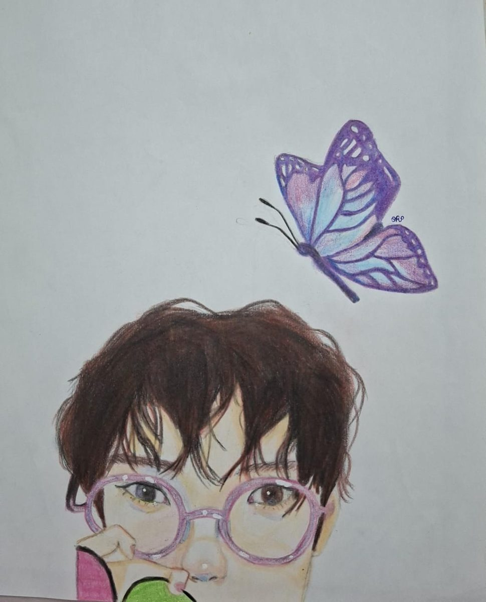
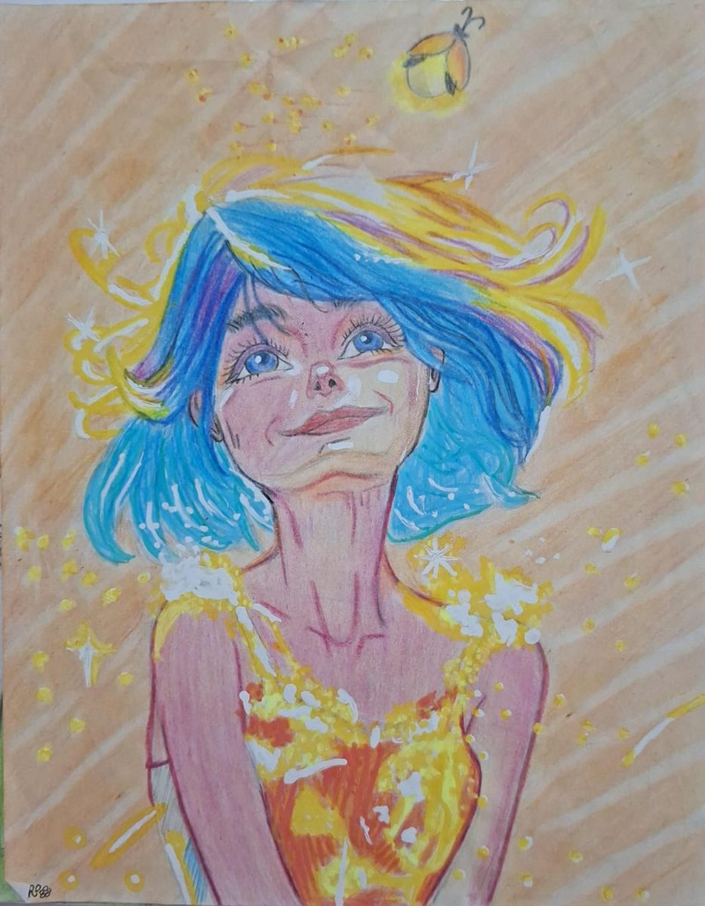
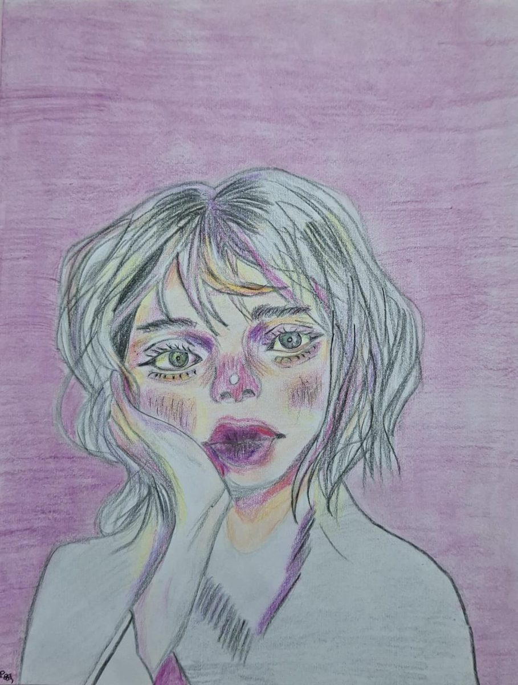
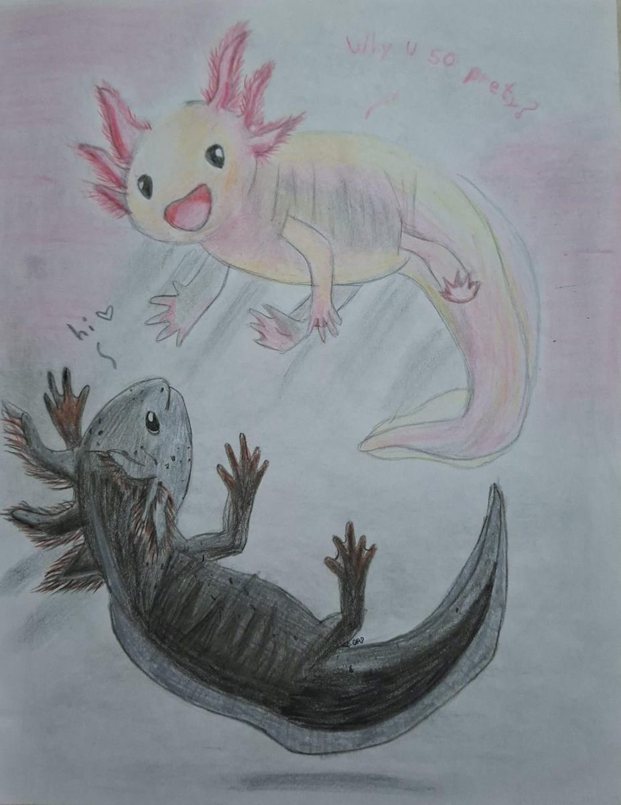

Serie de ilustraciones
Cuatro dibujos hechos a mano que comparten una misma paleta: rosas, violetas y azules, con toques de amarillo y naranja. Quise que los colores sirvieran de hilo entre obras muy distintas.



